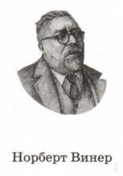
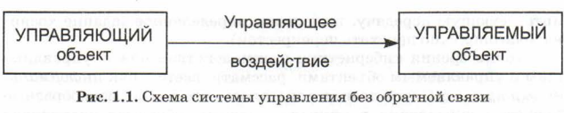

В 1948 году в США и Европе вышла книга американского математика Норберта Винера «Кибернетика, или Управление и связь в животном и машине». Эта книга провозгласила рождение новой науки — кибернетики.
Не случайно время появления этого научного направления совпало с созданием первых электронно-вычислительных машин (ЭВМ). Н. Винер предвидел, что использование ЭВМ для управления станет одним из важнейших их приложений, а для этого потребуется глубокий теоретический анализ самого процесса управления. Этому и посвящена наука кибернетика.

Управление есть целенаправленное воздействие одних объектов, которые являются управляющими, на другие объекты — управляемые.
Простейшая ситуация — два объекта; один — управляющий, второй — управляемый. Например: человек и телевизор, хозяин и собака, светофор и автомобиль. В первом приближении взаимодействие между такими объектами можно описать схемой, изображенной на рис. 1.1.
 В приведенных примерах управляющее воздействие производится в разных формах: человек нажимает кнопку управления телевизором; хозяин голосом подает команду собаке; светофор разными цветами управляет движением автомобилей и пешеходов на перекрестке.
С кибернетической точки зрения все варианты управляющих воздействий следует рассматривать как управляющую информацию, передаваемую в форме команд.
В примере с телевизором через пульт управления передаются команды следующего типа: «включить/выключить», «переключить канал», ‹увеличить/уменьшить громкость». Хозяин передает собаке команды голосом: «Сидеть» , «Лежать», «Взять!» . Световые сигналы светофора шофер воспринимает как команды: красный — «стоять», желтый — «приготовиться», зеленый — «ехать».
В данном выше определении сказано, что управление есть целенаправленный процесс, т. е. команды отдаются не случайным образом, а с вполне определенной целью. В простейшем случае цель может быть достигнута после выполнения одной команды. Для достижения более сложной цели бывает необходимо выполнить последовательность (серию) команд.
Последовательность команд по управлению объектом, выполнение которой приводит к достижению заранее поставленной цели, называется алгоритмом управления
В таком случае объект управления можно назвать исполнителем управляющего алгоритма. Значит, в приведенных выше примерах телевизор, собака, автомобиль являются исполнителями управляющих алгоритмов, направленных на вполне конкретные цели (найти интересующую передачу, выполнить определенное задание хозяина, благополучно проехать перекресток).
С точки зрения кибернетики взаимодействие между управляющим и управляемым объектами рассматривается как информационный процесс. С этой позиции оказалось, что самые разнообразные процессы управления в природе, технике, обществе происходят сходным образом, подчиняются одним и тем же принципам.
Кибернетика — наука об общих свойствах процессов управления в живых и неживых системах. Управление — это целенаправленное воздействие управляющего объекта на объект управления.
С точки зрения кибернетики управление происходит путем информационного взаимодействия между объектом управления и управляющим объектом. Последовательность управляющих команд определяется алгоритмом управления, а исполнителем этого алгоритма является объект управления.